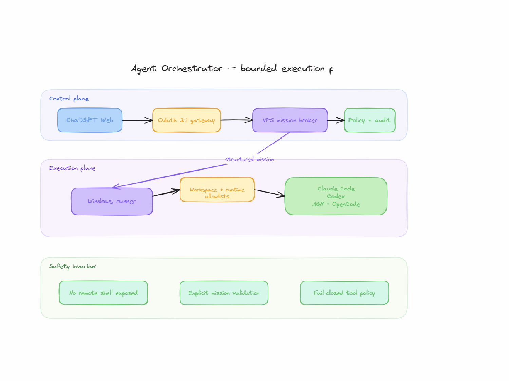

01 / LE PROBLÈME
Le problème
Lancer un agent depuis une interface de chat est simple sur le papier. Le vrai problème commence quand il faut lui donner accès à un ordinateur personnel sans exposer un terminal arbitraire, savoir s’il travaille encore et distinguer sa sortie de la réussite de la mission.
Un simple « commande exécutée : OK » ne suffit pas : le code peut ne pas fonctionner, les tests peuvent échouer, le processus peut être interrompu ou le runner peut disparaître au milieu d’une écriture.
02 / COMMENT LE SYSTÈME FONCTIONNE
Comment le système fonctionne
Le client appelle des outils MCP à travers une passerelle OAuth. Un broker conserve les missions et les jobs dans SQLite. Sur une machine autorisée, un runner interroge le broker en sortie, récupère des tâches structurées et lance les runtimes configurés, par exemple OpenCode ou Codex.
Un job ne contient pas une commande shell libre : il cible un identifiant de workspace autorisé, un runtime connu, un mode de permissions et un objectif. Le runner contrôle à nouveau ces valeurs localement et construit une invocation avec des arguments fixés.

03 / LES DÉCISIONS IMPORTANTES
Les décisions importantes
1. Séparer broker et runner : le serveur décide des états et le runner exécute, sans port entrant arbitraire sur le poste. 2. Utiliser des transitions atomiques : des versions de session et des protections de concurrence empêchent qu'un vieux runner termine à tort une mission récente. 3. Conserver des sorties et événements bornés pour diagnostiquer sans archiver éternellement des conversations entières.
La différence centrale est explicite : un job « completed » signifie que le processus s’est terminé avec code de sortie 0. La mission passe alors en attente de validation ; elle n’est « validated » qu’après examen du résultat attendu.
04 / LA FRICTION QUI CHANGE TOUT
La friction qui change tout
Un runner peut disparaître après avoir démarré un agent. Relancer automatiquement le travail pourrait produire deux écritures ou deux déploiements. Le système peut marquer le job « lost », sans fabriquer de succès ni répéter l’action. Une absence d’activité prolongée devient un signal de blocage, pas une permission de tuer ou relancer aveuglément.
05 / CE QUI EST VÉRIFIABLE · ET CE QUI NE L’EST PAS
Ce qui est vérifiable · et ce qui ne l’est pas
Le dépôt public décrit le protocole, le broker SQLite, les permissions, les transitions et les tests. Le schéma est une illustration Excalidraw déjà réalisée. Les garde-fous diminuent les risques, mais ils ne prouvent pas l'absence de toute faille ni la réussite métier d'une mission particulière.
06 / ENGINEERING
Trois choix qui changent le résultat
Pouvoir minimal
Outils MCP typés, runtimes et workspaces sur liste d'autorisation, pas d'arguments shell libres.
États honnêtes
La sortie du processus et la validation de l'objectif sont deux opérations distinctes.
Pas de double exécution
Un job perdu n'est ni confirmé ni rejoué automatiquement.
07 / NEXT
Ce qu'il reste à démontrer
Pour évaluer ce système dans un contexte client, je testerais les déconnexions, l’idempotence des actions d’écriture, la cohérence du broker et la qualité des critères de validation.